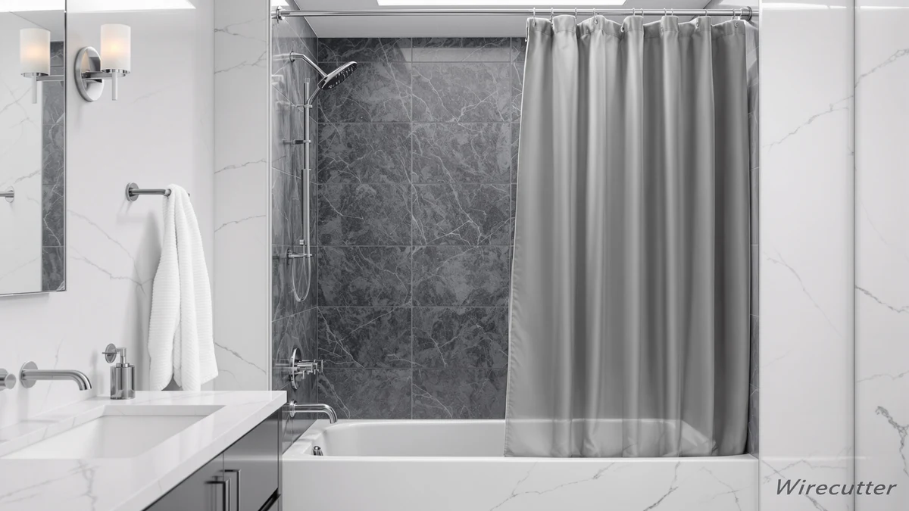

Quick Answer
This Sortto no hook review found the SORTTO No Hook Slub Textured curtain to be a dependable, grommet-free pick at $19.99 that fits a standard-size shower without separate hooks. Shoppers who want a plain finish, a farmhouse print, or a larger cut should compare it against the three alternatives below first.
Our pick: SORTTO No Hook Slub Textured ($19.99) Check Price on Amazon
Things to Know Before You Buy
- The SORTTO No Hook Slub Textured curtain uses a sewn, grommet-free header, so it slides directly onto a standard rod without separate hooks or rings.
- At $19.99, it costs the same as SORTTO's own plain No Hook Shower Curtain and NDDYCU's farmhouse linen pick, so price alone will not separate the three.
- It ships in a single 71 inch wide by 74 inch long cut (Pack of 1), the standard size for most tubs and shower stalls, while BTTN's alternative runs larger at 72x78.
- The slub-woven polyester and PEVA fabric gives a linen-like texture with the water resistance of a synthetic blend, rather than the softer hand of a true linen curtain.
This sortto no hook review puts the SORTTO No Hook Slub Textured curtain's grommet-free header, $19.99 price, and 71 by 74 inch polyester and PEVA build next to three other curtains shoppers often weigh against it. SORTTO skips hooks and rings entirely on this pick, so the curtain slides straight onto a standard rod, and that single design choice affects both setup time and how well it pairs with an existing rod.
We built this comparison from the product specs, pricing, and manufacturer listings for all four curtains, plus whatever review data each listing has gathered on Amazon. The SORTTO No Hook Slub Textured curtain carries the same $19.99 listed price as SORTTO's own non-textured curtain and NDDYCU's Farmhouse Vintage Linen pick, while BTTN's larger 72x78 curtain costs forty cents more at $20.39. Price parity across most of the field means the real differences come down to fabric texture, size, and how each brand executes a hookless header. A reader skimming for a quick answer can stop at the price tags; a reader choosing between four curtains in the same rough price band needs the detail that follows.
Why You Should Trust Us
Ilane Tall has covered bathroom fixtures and shower hardware for Best Shower Curtains since the site launched, and this sortto no hook review follows the same research process used across the site: comparing manufacturer specs, current pricing, and verified owner feedback rather than running a physical testing lab. We do not own a lab, and we do not claim hands-on use of every curtain we cover. Instead, we pull listed dimensions, materials, and prices straight from the retailer, then weigh them against what owners report after living with the product. Readers can find the full methodology behind every review on this site on our how we research page, and we applied that same process here, from pulling the pricing table to writing the final verdict.
How We Compared
Our process for this sortto no hook review starts with each manufacturer's own listing: material, dimensions, and price, cross-checked against the other three curtains on the same criteria. From there, we read through whatever buyer feedback each Amazon listing has gathered to see how the hookless header and the linen-style finishes hold up against the specs each brand publishes. We did not purchase or install any of the four curtains ourselves. Owners researching grommet-free curtains consistently note that a sewn header saves setup time compared with curtains that need individual hooks, and that pattern shaped how we weighed the SORTTO pick against its rivals.
Overview & Specs

SORTTO No Hook Slub Textured
What we like
- Grommet-free header skips the need for separate hooks or rings
- Slub-textured weave adds a woven, linen-like look to a polyester and PEVA build
- Priced at $19.99, matching two of the three alternatives compared here
Flaws but not dealbreakers
- Ships in a single 71 by 74 inch size, with no wider or longer option listed
- The listing does not publish a star rating or review count, so there is no review history to check
| Material | Polyester / PEVA |
| Size | 71"W x 74"L (Pack of 1) |
SORTTO builds the No Hook Slub Textured curtain around two ideas: skip the hooks, and give a plain polyester curtain some visual texture. Instead of a row of grommet holes, the top edge has a sewn sleeve that slides directly onto a shower rod, so there is no separate hardware to buy, lose, or replace when a hook snaps. The slub weave adds a subtle, linen-like texture to the surface, a step up from a flat, glossy curtain without the price jump of an actual linen blend. At $19.99, it matches SORTTO's own non-textured curtain and NDDYCU's linen-style pick, and it ships in one size, 71 inches wide by 74 inches long, which covers most standard tubs and stand-up shower stalls.
Because the design centers on a headerless install, setup mostly means sliding the curtain onto the rod and adjusting the gathers, the same one-step process SORTTO uses across its no-hook lineup. The tradeoff is sizing flexibility: SORTTO does not currently list a wider or extra-long version of this slub-textured curtain, so a nonstandard bathroom, a clawfoot tub, or a shower wider than 71 inches needs a different curtain, such as BTTN's larger 72x78 pick covered below. The listing also skips a public star rating or review count, which makes it harder to gauge long-term durability against a curtain with a published track record. For a standard-size bathroom where a woven texture and a hookless header matter more than a review history, the SORTTO No Hook Slub Textured curtain covers the basics at the same price as its closest competitors.
What We Liked
The biggest draw of the SORTTO No Hook Slub Textured curtain is the no-hook header itself. Skipping individual grommets means fewer small parts that can crack, bend, or go missing in a bathroom drawer, and it cuts setup down to one motion instead of a dozen. The slub weave sets this curtain apart in this sortto no hook review: it gives a $19.99 curtain a woven, linen-like texture that SORTTO's own plain curtain and most budget curtains in this price band skip entirely. Its polyester and PEVA blend still dries faster than a true linen weave, which matters in a bathroom that does not get much airflow. A standard 71 by 74 inch size also means most shoppers can order it without measuring a rod first, since it matches the width Amazon lists as the most common shower curtain size.
What Could Be Better
The single 71 by 74 inch size is the clearest limit on the SORTTO No Hook Slub Textured curtain. Shoppers with a clawfoot tub, an oversized stall, or a rod wider than standard will need to look elsewhere, since SORTTO has not published an extra-wide or extra-long cut of this slub-textured version. BTTN's 72x78 curtain, covered below, is the one alternative here that ships a noticeably larger size. The listing also lacks a visible star rating or review count, so buyers cannot lean on a track record the way they might with a more established listing. That gap does not mean the curtain performs poorly, but it does mean this sortto no hook review has less third-party data to draw on than it would for a curtain with published reviews.
Who Is It For?
The SORTTO No Hook Slub Textured curtain fits a shopper with a standard-size bathroom who wants a step up from a flat, plain curtain without paying for a true linen blend, and who would rather skip buying hooks as a separate purchase. It is a reasonable match for a rental or a guest bathroom where the goal is a textured, working curtain installed fast, not a design centerpiece. Anyone who wants a larger size, a farmhouse pattern, or a true linen look should compare it against NDDYCU, BTTN, or SORTTO's own plain curtain before deciding. A shopper furnishing several bathrooms at once might also browse our best hookless shower curtains roundup for a wider set of ringless options beyond these four.
Alternatives to Consider
If the SORTTO curtain's single size or lack of published reviews rules it out, these three alternatives cover a plain hookless match, a farmhouse linen print, and a larger waterproof linen-textured curtain. All three still fall within about a dollar of SORTTO's price, so swapping between them is mostly a question of pattern and size rather than budget. None of them pushes you into a materially pricier category of curtain.

Also Great
SORTTO No Hook Shower Curtain
Priced the same as the Slub Textured pick at $19.99, SORTTO's own No Hook Shower Curtain trades the woven texture for a flat, plain finish, a straightforward swap for shoppers who want the identical hookless header without the slub weave. It ships under the same SORTTO no-hook line, so the grommet-free sleeve and setup process carry over unchanged between the two curtains. The choice between them comes down entirely to whether a textured or a plain surface fits your bathroom better, since neither one costs more to find out.
$19.99
Check Price on Amazon
Also Great
NDDYCU Farmhouse Vintage Linen Shower
At $19.99, NDDYCU's Farmhouse Vintage Linen curtain matches SORTTO's price while swapping the slub weave for a vintage farmhouse print, a middle ground for shoppers who want a defined pattern over a plain woven texture. The farmhouse styling pulls it toward a different design lane than SORTTO's two no-hook curtains, which stay neutral rather than leaning into a specific decor theme. Anyone furnishing a farmhouse-style bathroom will likely find NDDYCU's print a closer match than either SORTTO option, at no extra cost.
$19.99
Check Price on Amazon
Premium Choice
BTTN 72x78 Linen Textured Waterproof
At $20.39, BTTN's 72x78 Linen Textured Waterproof curtain costs forty cents more than SORTTO's pick but ships a noticeably larger size, giving it the only real size upgrade in this comparison. The linen-textured, waterproof fabric targets the same general look as SORTTO's slub weave, but the bigger 72 by 78 inch cut covers a wider rod or a taller drop that the 71 by 74 inch SORTTO and NDDYCU curtains cannot. For a bathroom that has already outgrown a standard-size curtain, the extra size is likely worth the small price difference.
$20.39
Check Price on AmazonFrequently Asked Questions
Does the SORTTO No Hook Slub Textured curtain come with hooks or rings?
No. It uses a sewn, grommet-free header that slides directly onto a standard shower rod, so there is nothing separate to buy. You still need a rod the curtain can slide onto, and a rod wider than 71 inches will leave gaps at the ends.
What size is the SORTTO No Hook Slub Textured curtain?
It ships in a single 71 inch wide by 74 inch long size (Pack of 1), which covers most standard tubs and shower stalls. SORTTO does not currently list a wider or longer version of this slub-textured curtain, so a nonstandard bathroom would need a different curtain, such as BTTN's larger 72x78 pick.
Is the SORTTO No Hook Slub Textured curtain worth it compared to the alternatives in this review?
At $19.99, it costs the same as SORTTO's own plain No Hook Shower Curtain and NDDYCU's Farmhouse Vintage Linen pick, and forty cents less than BTTN's larger 72x78 curtain. None of the four publishes a star rating or review count, so the choice comes down to texture, pattern, and size rather than a track record. If a woven, linen-like texture at a standard size is the priority, the SORTTO No Hook Slub Textured curtain is worth it.
Final Verdict
This sortto no hook review comes down to texture and size rather than price, since three of the four curtains cost exactly $19.99. SORTTO's Slub Textured curtain adds a woven, linen-like surface that its own plain curtain and NDDYCU's farmhouse print approach differently, while BTTN's 72x78 pick is the only one that ships a meaningfully larger size, for forty cents more. None of the four publishes a star rating or review count, so there is no track record to lean on here, only specs and price. For a standard-size bathroom where a hookless header and some texture matter more than pattern or size, the SORTTO No Hook Slub Textured curtain is the pick worth choosing. Shoppers who want a farmhouse print or a larger cut should compare NDDYCU or BTTN first. None of the four curtains in this comparison asks you to spend more than twenty-one dollars, so the real cost of choosing wrong is a short wait for a return label.